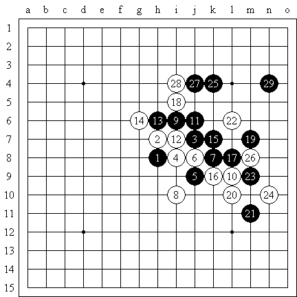
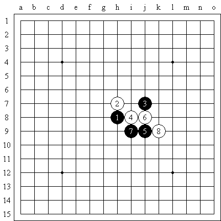
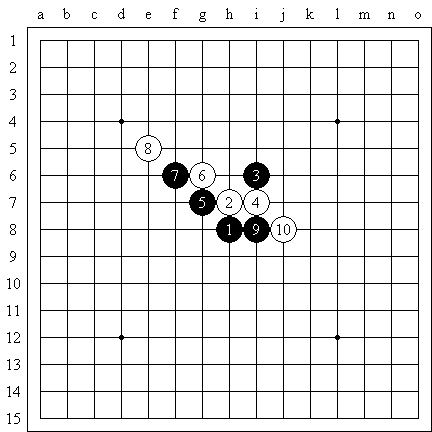
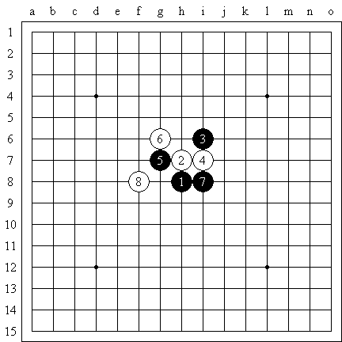
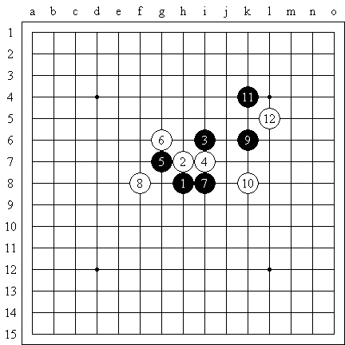
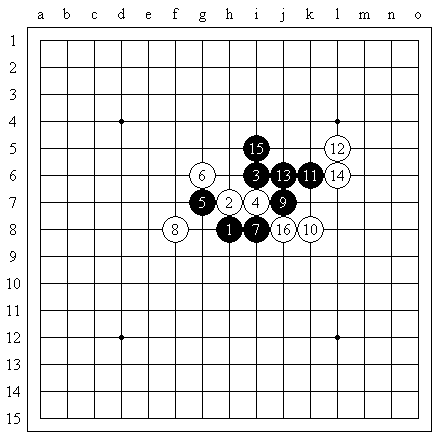
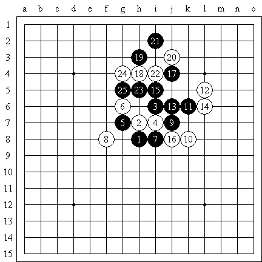
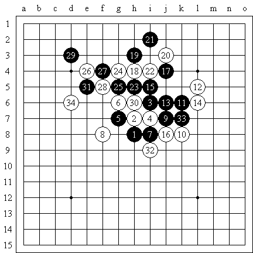
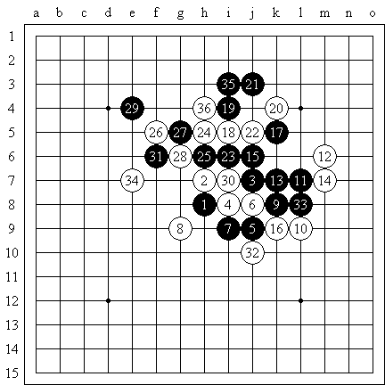

在经历了痛苦的全团赛以后，我把自己的棋风重新审视了一遍，在江苏联赛上，我以五战五败的“佳绩”垫底，与无锡杨彬的一盘实战，彻彻底底的发现了自己问题的所在。来看一下：
7的教训是很深刻的,如果当时7=9,杨彬肯定是要被秒杀的(残月这个白4的一打,已经拆到滚瓜烂熟).另外,下棋时不要有私心杂念~~
队友评价:
1.最大的问题是只看自己的棋不看对方的
2.你攻防转换的不好，你知道程咬金么？你就跟他似的，一上来三大板斧子，给对手化解你就没招了
3.最致命，你是昏招大王
4.你的全局观不好，方向感不行，建议去做三手胜和大道五目以及天狗道场。

虽然溪残一打的必胜早以公开，但是从实战的角度看来依然是复杂的。就在丸子到来的前夕，我已经和数位棋友简单拆解了一下，结果是无人按照棋谱定式秒杀，深入计算也许可以走对。事前我准备了几个小骗着，这个就是其中的一个。黑棋控制一个角，而白棋控制了中央。如果黑棋脱谱死防的话，无疑是很难的。

实战的丸子的黑棋７手迅速脱谱。不老实，也许他觉得黑棋优势巨大，随便做做就能做死白棋吧。８手防守右边也许最强，因为他和下图的溪月定式略有差别。黑棋欠一手棋。

此图是棋谱定式，参考图。

８手虽然必败，但是继续贯彻先前的意图：就是黑棋可以做棋，但是我会限制你的空间，让你后半盘不好走。显然黑棋的走向和做棋的手法是非常重要的。黑棋９手走在４的右边向上联系全部的棋子是通常的想法，但这恰恰是白棋的圈套。如果去掉３和６就还原成为云月常见的形状，记得在浙江的一次比赛上面。丸子持黑就走过那个云月，当时丸子就直接活三，走错定式。后来丸子自己的棋评中也没有指出云月的胜法，只是认为走不胜，搞平了就行。那么这次呢，搞平了有用吗？呵呵，圈套，高明的圈套无疑就是周瑜打黄盖，一个愿打，一个愿挨。

参考图：白棋缓缓的布阵，只待猎物走进口袋，然后慢慢拉紧口袋。其实白棋的弱点也是明显的，就是反击力太弱了。无疑黑棋可以调控棋局的走向和比赛的节奏。选择权在黑棋手中。如图是黑棋一种轻灵的走法。

实战１６必败，黑棋有两条平行的斜线。１，５和１３，１５。我们知道通常的做棋方法是先想一边长一条斜线，然后向另一边长另一条斜线。如果我直接挡住１３和１５的斜线的话，无疑丸子会失去进攻的方向，而导致他会由优势的布局转入防守的态势。那样无疑会破坏我事前圈套的意图。
丸子其实并没有一击必胜的决心和能力。方向，方向上的错误使得丸子越走越远。和前面的９手一样，丸子觉得需要更多的部队才能取得胜利。１７向上貌似正确的走法错过了一次胜机。

１８手白棋补住漏洞，真正的考验开始了。１９手做杀不错。２０手弱，当时我想２１走在１９的右边，２２＝２０，想当然的直接防掉算了，其实并不精细。２０老实防守里面应该可以稍稍让丸子失去方向感吧。实战２１不错，让２０显得废棋。２５手后丸子居然让我投。。。什么啊。由于丸子的事先警告，让我走的更为警惕。丸子在倒帮忙，正确的战术应该让我麻痹才对。

丸子中间一段的确走的不弱。３０很显然的唯一防。丸子有些失望。３２我不想委屈走在里面是因为３４更具有空间的感觉。白棋必须要有足够的空间才能在最后杀掉黑棋。
不好意思，刚才几个图虽然走法类似，但实战是残月的变化。发错图了。

实战图，实战３４我觉得黑棋应该没有棋了，我开始计算如何走好自己的白棋。丸子３５继续顽强，居然做出两套杀来。我仔细的验算了唯一的防守就是３５的斜线。彻底没棋了。
后面丸子还继续走了下去，不知道是丸子看不清还是他觉得反正是无害的淡水棋。结果就是再一次帮了白棋的忙。
丸子输的好难过啊。翌日老乡做东，在无锡小酌的一番。酒桌上丸子豪气风发，居然说出了凡是主办方都必败的豪言壮语。就在这天，５０气步枪埃蒙斯最后一枪４．４环，送给东道主的中国选手一枚几乎到手的金牌。丸子强的都碰过了。祝丸子好运。
［ 有志青年 于 2008-8-19 7:27:34 时奖励此帖[金币加 20 威望加1］